Ноты для фортепиано в PDF
14 томов по композиторам и эпохам, с интерактивным оглавлением, биографиями композиторов и ссылкой на видеоурок к каждой пьесе, у которой он есть. Каждая покупка включает PDF на 10 языках.

🎄 Новинка к РождествуТом 15
Рождественские песни и лёгкие мелодии
Пьес: 41 · страниц: 54
41 пьеса в лёгких переложениях двух уровней: 16 рождественских песен и 25 известных мелодий.
3,99 €
КупитьРождество · 16
- Jingle Bells (Бубенцы)
- Тихая ночь
- We Wish You a Merry Christmas
- Deck the Halls
- О, ёлочка (O Tannenbaum)
- Joy to the World
- Away in a Manger
- Hark! The Herald Angels Sing
- The First Noel
- Adeste Fideles
- God Rest Ye Merry, Gentlemen
- O Holy Night (Cantique de Noël)
- Щедрик (Carol of the Bells)
- Tu scendi dalle stelle (итальянская рождественская песня)
- Танец Феи Драже
- Auld Lang Syne (Старое доброе время)
Лёгкие мелодии · 25
- Hot Cross Buns
- У Мэри был барашек
- Twinkle Twinkle Little Star (Ах, скажу я вам, мама)
- Братец Яков (Frère Jacques)
- Ода к радости
- При свете луны (Au clair de la lune)
- Все мои утята (Alle meine Entchen)
- Лондонский мост падает
- У старого Макдональда была ферма
- Row, Row, Row Your Boat
- На мосту в Авиньоне
- Братец, потанцуй со мной («Гензель и Гретель»)
- Hickory Dickory Dock
- Кукушка (Kuckuck)
- У чистого ручья (À la claire fontaine)
- С днём рождения (Happy Birthday)
- When the Saints Go Marching In
- О, Сюзанна!
- Паучок (Itsy Bitsy Spider)
- Pop Goes the Weasel
- Долина Красной реки
- Amazing Grace
- Колыбельная Брамса (Wiegenlied)
- Зелёные рукава (Greensleeves)
- Danny Boy (Лондондеррийский напев)
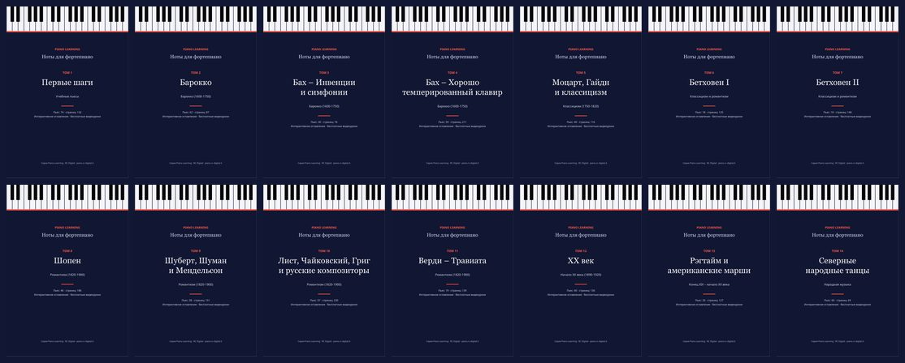
Вся серия
Все 14 томов: пьес — 564, страниц нот — 1 933.
Экономия 64 % по сравнению с 14 отдельными томами (55,86 €).
19,99 €
Купить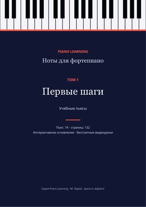
Том 1Первые шаги
Лёгкие этюды и пьесы: Бургмюллер, Черни, Ганон, Шуман («Альбом для юношества»), Кулау.
Пьес: 74 · страниц: 132
3,99 €
Купить Том 2
Том 2Барокко
Бах (менуэты, полонезы, маленькие прелюдии, хоралы), Гендель, Скарлатти, Рамо, Пахельбель.
Пьес: 62 · страниц: 87
3,99 €
Купить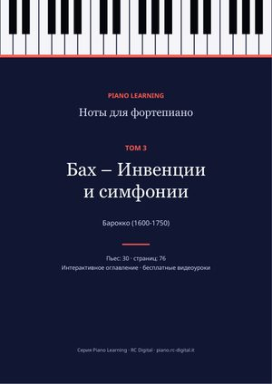
Том 3Бах – Инвенции и симфонии
Все 15 двухголосных инвенций и 15 трёхголосных симфоний.
Пьес: 30 · страниц: 76
3,99 €
Купить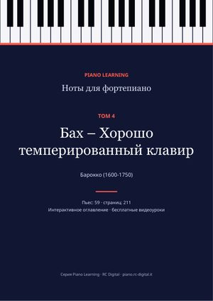
Том 4Бах – Хорошо темперированный клавир
Прелюдии и фуги из «Хорошо темперированного клавира», Английские и Французские сюиты, сюита BWV 1006a, «Искусство фуги».
Пьес: 59 · страниц: 211
3,99 €
Купить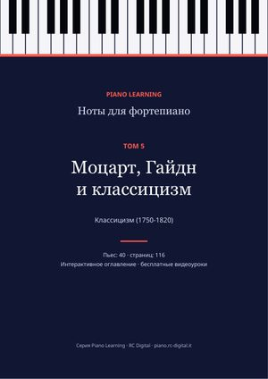
Том 5Моцарт, Гайдн и классицизм
Рондо в турецком стиле, Лёгкая соната, Фантазия ре минор и другая классика XVIII века.
Пьес: 40 · страниц: 116
3,99 €
Купить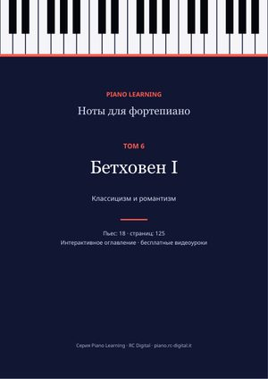
Том 6Бетховен I
«К Элизе», «Лунная соната», «Патетическая», вариации и сонаты.
Пьес: 18 · страниц: 125
3,99 €
Купить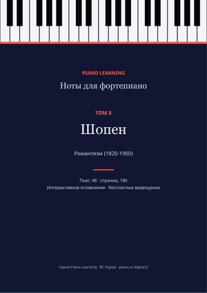
Том 8Шопен
24 прелюдии, ноктюрны, вальсы, этюды и баллады.
Пьес: 46 · страниц: 186
3,99 €
Купить Том 9
Том 9Шуберт, Шуман и Мендельсон
8 экспромтов Шуберта, «Детские сцены», «Песни без слов», Брамс.
Пьес: 28 · страниц: 151
3,99 €
Купить Том 10
Том 10Лист, Чайковский, Григ и русские композиторы
«Утешения», «Времена года», «Пер Гюнт», «Картинки с выставки» и другие романтики.
Пьес: 37 · страниц: 230
3,99 €
Купить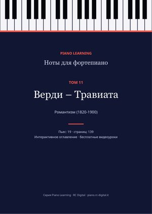
Том 11Верди – Травиата
Вся опера в переложении для фортепиано соло, номер за номером.
Пьес: 19 · страниц: 139
3,99 €
Купить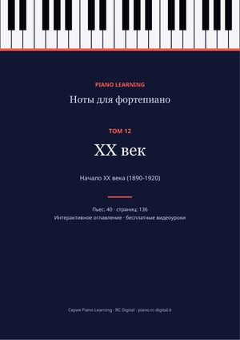
Том 12XX век
Дебюсси, Сати, Рахманинов, Скрябин, Барток.
Пьес: 40 · страниц: 136
3,99 €
Купить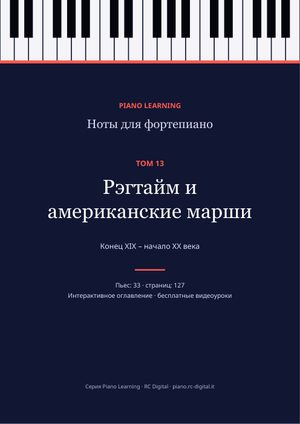
Том 13Рэгтайм и американские марши
Скотт Джоплин, Джон Филип Суза и другие.
Пьес: 33 · страниц: 127
3,99 €
Купить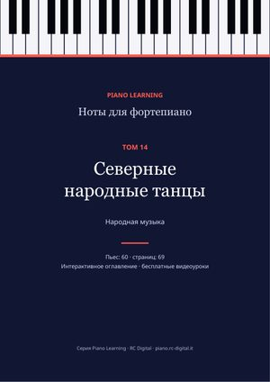
Том 14Северные народные танцы
Традиционные шведские и финские танцы.
Пьес: 60 · страниц: 69
3,99 €
КупитьБезопасная оплата через Payhip и мгновенная загрузка по электронной почте. Ноты — свободные издания (общественное достояние или Creative Commons): их можно найти и бесплатно, по одной пьесе, на страницах этого сайта; здесь они собраны и упорядочены в одном файле, с полными сведениями о каждом издании.